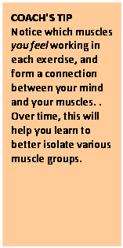

Stage 1 - Strength Training - Tri Level
Strength Training – Stage 1
In Stage 1, we keep things simple. You will become familiar with 11 core exercises that will help build a strength-training foundation. These exercises will act as the basis for the rest of this program.
Starting in Week 5, we add to this foundation by introducing some variations, including the use of free weights. For now, just do your best in this routine and don’t be afraid to ask questions
If you stay consistent during this program, you will build muscle. You may find, during the first few weeks, that you’ve gained a pound or two in muscle weight. Don’t fret. This is good. If your goal is to lose weight, remember strength training increases metabolic activity. Eat well, get proper rest, and don’t be too concerned about the scale.
Let’s start by learning some terms that reoccur throughout the program:
Repetitions:This refers to the number of times an exercise movement is preformed. Doing 15 sit-ups means you’ve done 15 “repetitions”.
Set:A group of repetitions is called a “set”. If you do 15 sit-up repetitions, this is called a set.
Now let’s get healthy!
Here’s what you will do in your workout
The basic drill: This routine includes 11 exercises that will take 45 minutes or less and should be completedtwice a week. Perform two sets of each exercise listed. Aim for 15 repetitions in the first set and a minimum of 10 repetitions in the second set — but aim for 15. Keep your movements slow, controlled, and move through the fullest range of motion possible.
Here’s how to do it:
1. Find the machine or station and complete 15 repetitions. (Set One)
2. Rest for one minute.
3. Repeat the exercise aiming for 15 repetitions (Set Two)
4. Take a 1-minute rest before moving to the next machine or station
A word about weights: In the initial set of workouts, it is important to experiment to find the appropriate weight for each exercise. Be conservative. Each exercise should feel tough — but not impossible. Remember that it’s more important to move the weight safely than the amount of weight being lifted.
A few tips when working with weights:
• If the weight load feels too heavy, stop immediately. Remove some weight right away.
• If the weight load feels too light, finish your set first. Add more weight
prior to your next set.
• As a rule of thumb, increase the weight when you can do 15 repetitions for both sets in proper form.
Exercise Schedule
Week 1
|
Day 1 |
Day 2 |
Day 3 |
Day 4 |
Day 5 |
|
Hip Abduction Hip Adduction Leg Extension Leg Curl* Leg Press* |
Leg Curl* Leg Press*
|
Machine Row Machine Chest Press Lateral Pulldown Machine Overhead |
Machine Row Machine Chest Press Abdominal Machine or Crunch Leg Raise |
Hip Adduction Leg Extension Leg Curl* Leg Press*
|
* Denotes pre-exhaustion Superset - to be done back-to-back w/o resting
Week 2
|
Day 1 |
Day 2 |
Day 3 |
Day 4 |
Day 5 |
|
Hip Abduction Hip Adduction Leg Extension Leg Curl* Leg Press* |
Leg Curl* Leg Press*
|
Machine Row Machine Chest Press Lateral Pulldown Machine Overhead
|
Machine Row Machine Chest Press Abdominal Machine or Crunch Leg Raise |
Hip Adduction Leg Extension Leg Curl* Leg Press*
|
* Denotes pre-exhaustion Superset - to be done back-to-back w/o resting
Exercise Routines
|
#Hip Abduction# |
Wk 1 Day 1- 2 sets - 5 reps Wk 2Day 1- 2 sets - 5 reps |
|
#Hip Adduction# |
Wk 1Day 1- 2 sets - 5 reps Wk 1Day 5- 2 sets - 2 to 4 reps Wk 2Day 1- 2 sets - 5 reps Wk 2Day 5- 2 sets - 2 to 4 reps |
|
#Leg Extension# |
Wk 1Day 1- 2 sets - 5 reps Wk 1Day 5- 2 sets - 2 to 4 reps Wk 2Day 1- 2 sets - 5 reps Wk 2Day 5- 2 sets - 2 to 4 reps |
|
#Leg Curl# |
Wk 1Day 1- 2 sets - 5 reps Wk 1Day 2- 2 sets - 5 reps Wk 1Day 5- 2 sets - 2 to 4 reps Wk 2Day 1- 2 sets - 5 reps Wk 2Day 2- 2 sets - 5 reps Wk 2Day 5- 2 sets - 2 to 4 reps |
|
#Leg Press# |
Wk 1Day 1- 2 sets - 5 reps Wk 1Day 2- 2 sets - 5 reps Wk 1Day 5- 2 sets - 2 to 4 reps Wk 2Day 1- 2 sets - 5 reps Wk 2Day 2- 2 sets - 5 reps Wk 2Day 5- 2 sets - 2 to 4 reps |
|
#Machine Row# |
Wk 1Day 3- 2 sets - 5 reps Wk 1Day 4- 2 sets - 2 to 4 reps Wk 2Day 3- 2 sets - 5 reps Wk 2Day 4- 2 sets - 2 to 4 reps |
|
#Machine Chest Press# |
Wk 1Day 3- 2 sets - 5 reps Wk 1Day 4- 2 sets - 2 to 4 reps Wk 2Day 3- 2 sets - 5 reps Wk 2Day 4- 2 sets - 2 to 4 reps |
|
#Lateral Pulldown# |
Wk 1Day 3- 2 sets - 5 reps Wk 2Day 3- 2 sets - 5 reps |
|
#Machine Overhead Press# |
Wk 1Day 3- 4 sets - 4 reps Wk 2Day 3- 4 sets - 4 reps |
|
#Abdominal Machine or Crunch# |
Wk 1Day 4- 2 sets - 2 to 4 reps Wk 2Day 4- 2 sets - 2 to 4 reps |
|
#Leg Raise# |
Wk 1Day 4- 3 sets - 6 reps Wk 2Day 4- 3 sets - 6 reps |
Notes from the Coach
· If you’re starting an exercise program for the first time or haven’t exercised in a while, you may feel sore afterwards. Soreness usually tapers off in a few days and will happen less often as the weeks go by. If you feel a lingering pain for several days — see a doctor.
· Your muscles should feel tired after a workout. If you are properly nourished and have sufficient rest, you will be stronger when it is time for your next workout. This is called progress.
· As your workouts become more challenging, you may find yourself breathing harder. This is normal. Muscles need oxygen, so in some instances, a strength training exercise can be “aerobic”, like running or climbing stairs.
· Are you moving quickly between sets and between exercises? Performing your workout with minimal rest allows you to keep your heart rate higher. If you want to kick up your workout, lower your recovery time to 30 seconds in between sets.
During the exercise, concentrate on the muscles you feel working. If you can form a connection between your mind and muscles, it will help you progress more quickly.